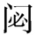

右盖云“齐故仪同□公孙墓志”。志云：君讳肱，勃海条人。祖，仪同三司，青州使君。父，骠骑大将军，开府仪同三司，中领军。君以皇建二年终于晋阳第里，时年九岁。天统二年葬于邺北紫陌之阳。众家跋文，多以“公孙”为氏，因疑肱是略孙。[149]然略，人[150]，与志言“勃海条人”者不合。志盖“公”字上有空格，似失刻其姓。原文当云“齐故仪同某公孙墓志”也。按北齐天统以前，勃海条人为领军者，天保间有平秦王归彦[151]，天统初有东平王俨[152]。《魏书·高湖传》云：归彦，武定末，骠骑大将军，开府仪同三司，徐州刺史，安喜县开国男。又云：父徽，永熙中赠冀州刺史，则与志之“青州使君”不合。又《北齐书·归彦传》云：以讨侯景功，封长乐郡公，除领军大将军，领军加大，自归彦始。而志云“中领军”。《北齐书·武成帝纪》云：河清元年秋七月，冀州刺史，平秦王归彦据土反，诏大司马段韶，司空娄叡计擒之。乙未，斩归彦并其三子。而志云“威名方盛”，皆不合。俨，亦领军大将军，又武成帝子，更非其人。《魏书·高湖传》又有仁，昋[153]，皆赠仪同三司，青州刺史。仁子贯[154]，不可考，入齐以后不可知。昋子永乐，弼，《北齐书》有传，皆不云为中领军。[155]然志云“勃海条人”，又云“龙子驰声”，又云“终于晋阳”，“葬于邺”，皆似北齐帝室。其时之领军归彦以河清二年二月解，[156]俨于天统二年始见于史，[157]其间四年史阙，不知何人。故终疑肱为高氏，而史阙有间，不能得其祖父之名，姑识所见于后，以俟深于史者更考焉。
［附］讳肱墓志
志言肱，勃海条人。祖，仪同三司，青州使君。父，骠骑大将军，开府仪同三司，中领军。以皇建二年终于晋阳里弟，年九岁，天统二年葬于邺北紫陌之阳。盖题“齐故仪同□公孙墓志”八字。肱卒止九岁，则仪同之故必属其祖，志盖“仪同”下空一格，当为失刻其姓，故二石俱存而姓不可知。志跋乃于公孙氏求中领军，宜其不能得也。按其北齐以“条人”为领军者，天统时有东平王俨，天保时为平秦王归彦。《魏书·高湖传》云：归彦，武定末，骠骑大将军，开府仪同三司，徐州刺史，安喜县开国男。云其父徽，永熙中赠冀州刺史。《北齐书》本传云：天保元年，封平秦王。以孝闻，征为侍郎。以讨侯景功，封长乐郡公，除领军大将军，领军加大，自归彦始也。志仅作“中领军”。《高湖传》言归彦父徽赠冀州刺史。志云“青州使君”，皆不合。《高湖传》又言湖第三子谧，谧兄真，真子仁，正光中，卒于河州别驾。太昌初，赠使持节，侍中，都督青徐齐济三州诸军事，仪同三司，青州刺史。则与肱祖官位合，惟后有脱简，不知仁与归彦何属。《北齐书》言徽，魏末坐事当徙凉州，行至河渭间，遇贼，以军功得免流。因于河州积年，以解胡言，为西域大使，则与
注 释
[148] 本篇据手稿编入，原无标题、标点。写作时间未详。另有一篇未写完的手稿，题为《讳肱墓志》，附后备考。
《□肱墓志》，出土于河南安阳。志石已佚，盖则犹存。志铭共十八行，行十八字，正书。全文如下：
君讳肱字如肱海人也门资磐石之固世
保维城之业祖仪同三司青州使君秉德含弘
来在物父骠骑大将军开府仪同三司中领
军专总禁闱威名方盛观夫珠潜溟海璧润荆
山不有高深孰蕴灵异君神情桀立崖岸恢举
龙子驰声凤雏飞誉曹童测舄之妙未为通识
王孺鉴虎之奇谁云智勇思叶风云调谐金石
进退有度容止可观雅俗其风规家国俟其
梁栋而垂天未效奄从不秀以皇建二年十一
月廿六日终于晋阳之第里时年九岁天统二
年二月廿五日葬於邺北紫陌之阳嗟乎居诸
互始屡移岸谷寒暑交谢每易荣枯是用勒石
泉扃庶遗芳不朽乃为铭曰
璧出荆山玉自蓝田虽云重宝不雕不妍岂如
令质其锋迥出问望堂堂德音是称孺子
实通理辩日未俦论月非拟鹏翰渐就豹变
垂成南山欲下北海将征忽为异世奄

泉扃千秋万古空挹余声
[149] 关于□肱为公孙氏的说法，如清代端方《匋斋藏石记》卷十二：“按《魏书·前废帝本纪》：普泰二年‘三月丁丑，加骠骑大将军、北华州刺史公孙略仪同三司。’略由骠骑大将军加仪同三司，与肱父之官脗合。疑肱父即略。”杨守敬《壬癸丁戊金石跋》：“‘祖仪同三司青州使君父骠骑大将军开府仪同三司中领军’，而不书祖、父之名，亦金石变例。按《魏书·公孙邃传》：‘出为使持节、安东将军、青州刺史’，肱祖似即其人。”
[150] 按鲁迅手稿中“人”字前空二格，当是待补的地名。
[151] 归彦 高归彦，字仁英，勃海条（今河北景县）人。北朝魏宁西将军、凉州镇都大将高湖的曾孙，北齐武帝高欢的族弟，于北齐宣帝天保元年（550）六月封平秦王。
[152] 俨 高俨，字仁威，北齐武成帝第三子，《北齐书·高俨传》：“初封东平王，拜开府、侍中、中书监、京畿大都督、领军大将军、领御史中丞，迁司徒、尚书令、大将军、录尚书事、大司马。……武成崩，改封琅邪。”
[153] 仁 高仁，高湖的曾孙，父名拔。《魏书·高湖传》：“仁，正光中，卒于河州别驾。太昌初，赠使持节、侍中、都督青齐济三州诸军事、仪同三司、青州刺史，谥曰明穆。”，高昋，字明珍，亦为高湖曾孙，父名睹儿。《魏书·高湖传》：昋，“太昌初，赠使持节、都督冀沧二州诸军事、征东将军、冀州刺史。永熙中，重赠侍中、都督青徐光三州诸军事、骠骑大将军、仪同三司、青州刺史，谥曰文景。”按今人赵万里在《汉魏南北朝墓志集释》卷七中以为□肱系高昋之孙。
[154] 贯 高贯，《魏书·高湖传》：“字小胡。永兴末，通直散骑常侍、金紫光禄大夫、尚食典御。”
[155] 永乐 高永乐，《北齐书·阳州公永乐传》：“太昌初，封阳州县伯，进爵为公。累迁北豫州刺史。”卒后“赠太师、太尉、录尚书事，谥曰武昭。”弼，据《北齐书·阳州公永乐传》，当为长弼，永乐之弟，以宗室封广武王，后贬南营州刺史。
[156] 高归彦解领军职，当在河清元年（562），《北齐书·武成纪》：河清元年“二月丁未，……以领军大将军、宗师、平秦王归彦为太宰、冀州刺史”。
[157] 有关高俨的记载，最初见于《北齐书·后主传》：天统二年（567）“五月乙酉，……封太上皇帝子俨为东平王”。